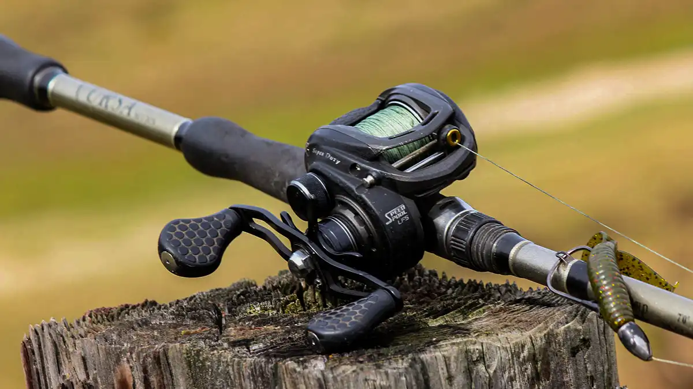

Ask this question in any tackle shop and you'll get a different answer depending on who's behind the counter. The truth is there's no universal winner. The right reel depends on what you're chasing, where you're fishing, and how much patience you have for a learning curve that will cost you lures before it pays off.
Here's how to think it through.
How Each Reel Actually Works
A spinning reel hangs below the rod. The spool is fixed and doesn't rotate when you cast. Line peels off the front of the spool in loose coils, which is why it handles light lures so well and why backlash is essentially a non-issue. You hold the line with your index finger, flip the bail, cast, and retrieve. Two hands involved, but the mechanics are forgiving.
A baitcasting reel sits on top of the rod. When you cast, the spool itself spins to release line. That rotating spool is what gives you the accuracy and distance that baitcasting is known for, and it's also what causes backlash when the spool outpaces the lure and the line bunches into a bird's nest. You control spool speed with your thumb, a brake system, and a tension knob. Get it right and you can put a lure exactly where you want it. Get it wrong and you're picking at a tangle while the fish moves on.

The Case for Spinning
For most freshwater fishing, a spinning setup is the practical choice. The most common species and presentations lean toward spinning's strengths.
Walleye, perch, and trout are finesse fish. Drop-shot rigs, light jigs, small soft plastics on 6 to 10 lb line: these are the staples, and a spinning reel handles all of them naturally. The light presentation matters because fish like walleye nibble before they commit. You need sensitivity, not power.
River fishing of any kind plays to spinning's strengths too. Light spinners, small spoons, and jigs in moving water are where spinning gear excels. Managing a baitcaster in tight quarters with a current running is a frustrating exercise, and accuracy on short casts in moving water is harder to achieve before you've fully mastered spool control.
Wind is also worth naming. Open water gets blown up regularly, especially in spring and fall. Baitcasters and wind are a miserable combination: even a competent caster will fight backlash when a gust hits mid-cast. A spinning reel doesn't care about the wind.
"For anyone starting out, spinning is the right call. The time you'd spend practicing backlash control is time better spent learning to read water, identify structure, and understand what fish are actually doing."
The Case for Baitcasting
There are situations where a baitcaster genuinely earns its place, and they're mostly tied to larger species and heavier presentations.
Pike, muskie, and largemouth bass in heavy cover want big lures: large spinnerbaits, swimbaits, glide baits, and heavy jigs. Throwing that gear repeatedly through a long day on the water is where a baitcaster's ergonomics matter. The reel sits on top of the rod in line with your forearm, which is a more natural position for power fishing than the offset angle of a spinning setup. By the end of a full day of casting, that difference is felt.
Accuracy matters too. When a largemouth is holding tight to a weed edge or tucked under a dock, you need to put the lure within a foot of cover to trigger a strike. Experienced baitcaster users can place a lure with a precision that spinning gear makes harder, especially on shorter casts where you have limited time to control the trajectory.
The same applies to bass fishing around rocky structure: targeted casts, heavier line to handle the fight, and the ability to flip or pitch a jig into tight spots quietly. A baitcaster with 15 to 20 lb fluorocarbon is a better tool for that job than a spinning setup.

The Learning Curve Problem
The baitcaster's reputation for difficulty is earned. Every angler goes through a phase where backlash seems to happen on half their casts, and each one costs time and sometimes a lure. The thumb pressure required to feather the spool becomes instinctive eventually, but "eventually" can mean a full season of frustration before it clicks.
That's worth naming because a lot of anglers move to baitcasting because they feel they're supposed to, not because their fishing actually requires it. Tournament bass anglers carry twenty baitcasting combos on a professional boat because they're dialling in specific techniques all day. That's not the same situation as a weekend angler targeting walleye or trout on a local lake.
Spinning gear is not a beginner's compromise. Professional anglers fish spinning tackle at the highest levels of competition because it's genuinely the better tool for certain presentations. If your fishing is mostly trout, walleye, and panfish, a good spinning setup will serve you better than a baitcaster you haven't fully mastered.
Matching Your Reel to Common Species
Walleye and Perch
Spinning, every time. Light jigs, drop-shot rigs, finesse presentations on 6 to 10 lb line. The sensitivity of a good spinning rod and reel lets you feel the subtle bite that walleye are known for.
Pike and Muskie
Baitcasting earns its place here, particularly for larger presentations. That said, many anglers run spinning setups with 20 to 30 lb braid and a fluorocarbon leader and catch plenty of fish. If you're throwing big gear into heavy cover all day, baitcasting is the better ergonomic choice.
Largemouth Bass
Baitcasting has the edge when you're skipping jigs under docks or flipping into heavy vegetation. For finesse presentations on pressured fish, spinning with light braid and a fluorocarbon leader is often more effective. Most serious bass anglers keep both on the deck.
Smallmouth Bass
Either works, but the presentations that smallmouth respond to, drop-shots, ned rigs, light tube jigs, tend to favour spinning. Heavier cover situations are the exception.
Trout
Spinning, without question. Light line, small lures, often in moving water. A baitcaster has no business on a trout stream.
Panfish
Spinning only. There's no scenario where a baitcaster is the right call for crappie or bluegill.
Line Choice Changes Everything
The old rule was simple: spinning for anything under 10 lb test, baitcasting for anything heavier. That boundary has blurred considerably with modern braided line.
Braid is thin for its breaking strength. 30 lb braid has roughly the diameter of 10 lb monofilament, which means a spinning reel can now handle presentations that used to require a baitcaster. Plenty of pike and muskie anglers have caught on to this: a medium-heavy spinning rod with 30 lb braid and a 20 lb fluorocarbon leader handles big fish competently without the baitcaster's learning curve.
The trade-off is that braid on a baitcasting reel creates its own problems. The thin, slick line can dig into the spool under pressure and cause a buried tangle on the next cast. Most experienced baitcaster users stick to monofilament or fluorocarbon on their casting reels, using braid mainly on specific applications like frog fishing or throwing topwater into vegetation.
"Know your line before you commit to a reel. Often the line decision will point you toward the right reel on its own."
Do You Need Both?
Probably, eventually. But not on day one.
If you're starting out or fishing mixed-species water without a strong preference for bass or pike in heavy cover, start with a quality spinning combo in the medium to medium-heavy range. A 7-foot medium-action rod with a size 2500 to 3000 spinning reel covers trout, walleye, panfish, and moderate pike fishing without asking you to master a new skill set.
When you've got that dialled in and you're spending serious time targeting bass or pike in heavy cover, a baitcasting combo becomes worth the investment and the practice time. A 7-foot medium-heavy casting rod with a reel set up for 12 to 17 lb fluorocarbon handles the majority of that fishing.
Two rods, covering almost everything freshwater throws at you. That's the honest answer.

20+ years fishing Quebec's freshwater systems. Kayak angler, catch-and-release advocate, and founder of Sub Urban Anglers.
Read More About Me